Código
library(tidyverse)
library(knitr)
source("FuncionesFactorial.R")library(tidyverse)
library(knitr)
source("FuncionesFactorial.R")Las filas deben ser individuos y las columnas, variables numéricas sin valores perdidos ni varianza nula. Se necesitan psych y GPArotation. El modelo se ajusta explícitamente con psych::fa() o factanal(); las funciones auxiliares ordenan diagnósticos, tablas y gráficos.
Supongamos que un cuestionario contiene preguntas sobre preocupación, tensión, dificultad para relajarse y problemas de sueño. Las respuestas forman una tabla ordinaria de individuos por variables, pero podemos plantear dos preguntas muy diferentes.
PCA pregunta: ¿qué combinaciones lineales permiten representar las respuestas perdiendo la menor variabilidad posible? Una componente es un resumen calculado a partir de las variables. No es necesario afirmar que exista una entidad oculta que haya producido las respuestas.
El análisis factorial pregunta: ¿podría una dimensión no observada, por ejemplo ansiedad, explicar que preocupación, tensión y dificultad para relajarse estén correlacionadas? Los problemas de sueño podrían compartir parte de ese factor y conservar además mucha variación específica.
| PCA | Análisis factorial exploratorio | |
|---|---|---|
| Pregunta central | ¿Cómo comprimir la nube de datos? | ¿Qué dimensiones comunes podrían explicar las correlaciones? |
| Varianza utilizada | Toda la varianza observada | Principalmente la covariación compartida |
| Resultado | Componentes construidas | Factores latentes propuestos |
| Variación propia de un ítem | También participa en la representación | Se separa como unicidad |
Un ejemplo extremo ayuda a ver la diferencia. Si añadimos al cuestionario una variable con enorme variabilidad pero casi independiente de las demás, PCA puede necesitar una componente para representarla bien. En AFE esa variable tendrá poca comunalidad y gran unicidad: no ayuda a definir el factor común, aunque pueda ser importante por sí misma.
PCA resume cómo varían los datos observados. AFE propone por qué covarían las variables mediante factores comunes. El AFE formula una hipótesis latente más fuerte, pero no demuestra por sí solo que el factor sea una causa real.
En psicometría, varias preguntas pueden estar asociadas porque reflejan ansiedad, extraversión o satisfacción. En otros ámbitos, varias mediciones podrían compartir dimensiones de eficiencia, capacidad o comportamiento. No observamos directamente el factor: observamos variables que se mueven juntas.
El objetivo es separar:
Supongamos que observamos \(p\) variables estandarizadas \(X_1,\ldots,X_p\). El modelo factorial común con \(m\) factores se escribe como:
\[ X_j = \lambda_{j1}F_1 + \lambda_{j2}F_2 + \cdots + \lambda_{jm}F_m + \epsilon_j. \]
Aquí:
En forma matricial:
\[ X = \Lambda F + \epsilon, \]
donde \(\Lambda\) es la matriz de cargas factoriales.
Las dimensiones de los objetos ayudan a leer el modelo: \(X\) y \(\epsilon\) son vectores \(p\times1\), \(F\) es \(m\times1\) y \(\Lambda\) es \(p\times m\). Una carga grande en valor absoluto indica una relación intensa con el factor. Su signo da la dirección, aunque el signo completo de un factor puede invertirse sin cambiar el modelo.
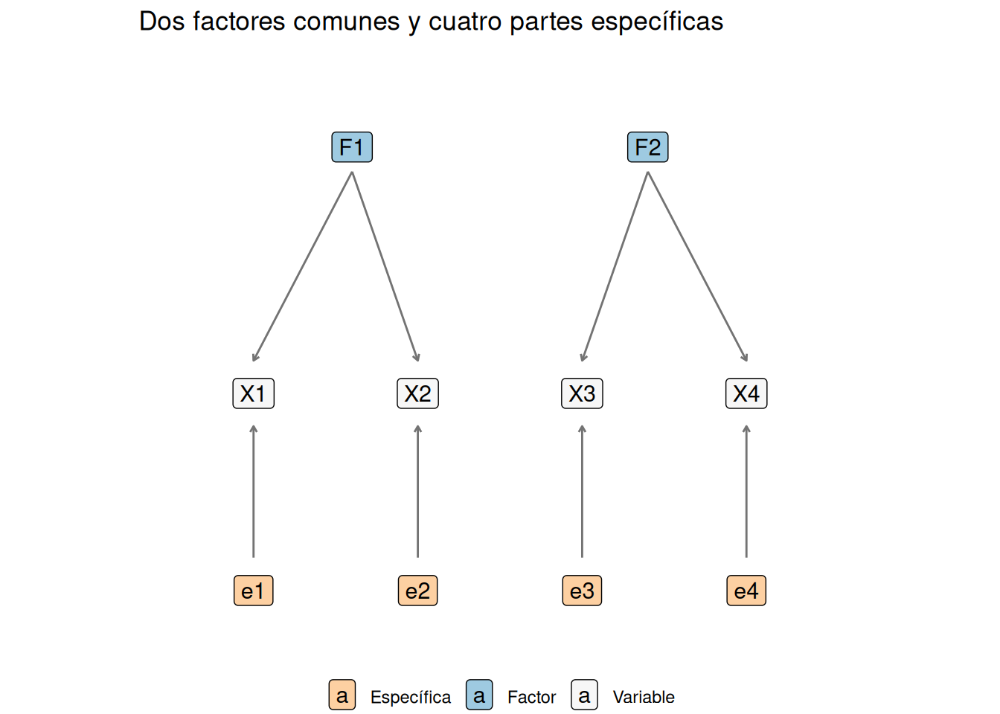
El diagrama hace explícita la hipótesis: las asociaciones entre variables se atribuyen a factores comunes, mientras que las partes específicas no producen correlaciones con otras variables.
La idea central no está solo en predecir cada variable, sino en explicar la matriz de covarianzas o correlaciones. Para ver de dónde sale la forma matricial, partimos del modelo:
\[ X = \Lambda F + \epsilon. \]
Aquí \(X\) es el vector de variables observadas, \(F\) es el vector de factores comunes y \(\epsilon\) es el vector de errores específicos:
\[ \epsilon = \begin{pmatrix} \epsilon_1\\ \epsilon_2\\ \vdots\\ \epsilon_p \end{pmatrix}. \]
El modelo factorial clásico asume que variables, factores y errores están centrados. Para máxima verosimilitud suele añadirse normalidad, pero la descomposición de covarianzas no requiere por sí sola ese supuesto. Cada error específico tiene varianza propia:
\[ \epsilon_j \sim \mathcal{N}(0,\psi_j). \]
Además, se asume que los errores específicos son independientes entre sí y no están correlacionados con los factores:
\[ Cov(\epsilon_j,\epsilon_k)=0 \quad \text{si } j \neq k, \]
\[ Cov(F,\epsilon)=0. \]
Por eso la matriz de covarianzas de los errores es diagonal:
\[ Cov(\epsilon)=\Psi = \begin{pmatrix} \psi_1 & 0 & \cdots & 0\\ 0 & \psi_2 & \cdots & 0\\ \vdots & \vdots & \ddots & \vdots\\ 0 & 0 & \cdots & \psi_p \end{pmatrix}. \]
Si los factores tienen matriz de covarianzas \(\Phi\),
\[ Cov(F)=\Phi, \]
entonces podemos calcular la covarianza de \(X\):
\[ Cov(X)=Cov(\Lambda F+\epsilon). \]
Usando las reglas de covarianza para transformaciones lineales:
\[ Cov(X)=Cov(\Lambda F)+Cov(\epsilon)+Cov(\Lambda F,\epsilon)+Cov(\epsilon,\Lambda F). \]
Como factores y errores específicos se suponen no correlacionados, los términos cruzados son cero:
\[ Cov(\Lambda F,\epsilon)=0, \]
\[ Cov(\epsilon,\Lambda F)=0. \]
Por tanto:
\[ \Sigma = \Lambda \Phi \Lambda^\top + \Psi. \]
Esta ecuación es el corazón del análisis factorial: la covarianza observada se descompone en una parte común, \(\Lambda \Phi \Lambda^\top\), y una parte específica, \(\Psi\).
Si los factores son ortogonales, \(\Phi = I\), y el modelo se simplifica:
\[ \Sigma = \Lambda \Lambda^\top + \Psi. \]
En análisis con variables estandarizadas, se suele trabajar con la matriz de correlaciones \(R\):
\[ R \approx \Lambda \Lambda^\top + \Psi. \]
Para dos variables distintas \(j\ne \ell\), la diagonal \(\Psi\) no interviene y
\[ r_{j\ell}\approx\sum_{k=1}^{m}\lambda_{jk}\lambda_{\ell k}. \]
Dos variables se correlacionan cuando tienen patrones de cargas parecidos. Esta igualdad muestra qué intenta reproducir el modelo y por qué los residuos entre correlaciones observadas y reproducidas son un diagnóstico central.
La carga \(\lambda_{jk}\) mide la relación entre la variable observada \(X_j\) y el factor \(F_k\). Si las variables y factores están estandarizados y los factores son ortogonales, la carga puede interpretarse de forma parecida a una correlación.
La comunalidad de la variable \(j\) es la parte de su varianza explicada por los factores comunes:
\[ h_j^2 = \lambda_{j1}^2 + \lambda_{j2}^2 + \cdots + \lambda_{jm}^2. \]
La unicidad es la parte no explicada por los factores comunes:
\[ \psi_j = 1 - h_j^2. \]
Una variable con comunalidad alta está bien representada por la solución factorial. Una variable con unicidad alta contiene mucha información específica o ruido que los factores no explican.
El AFE no puede separar, sin información adicional, la varianza verdaderamente específica del error de medida. Además, una comunalidad baja no convierte automáticamente una variable en irrelevante: indica que el espacio común elegido la representa mal.
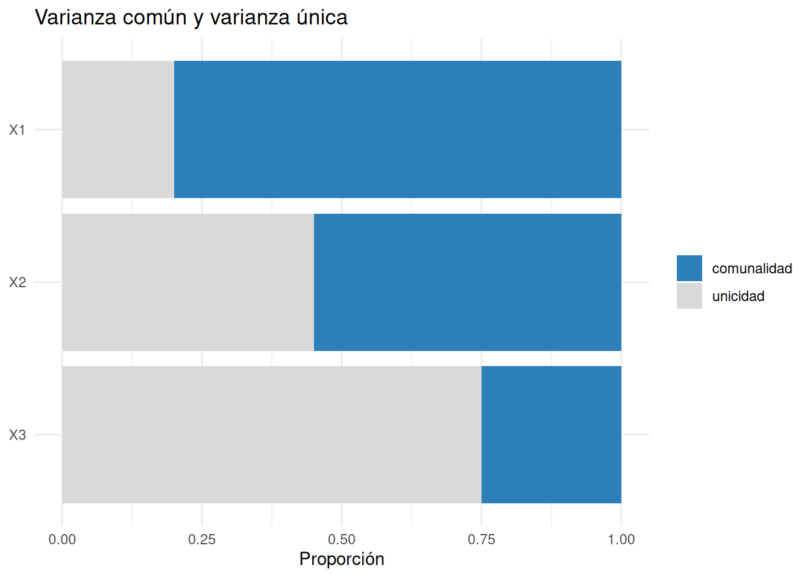
Usamos 25 ítems de personalidad de psych::bfi. Las letras identifican cinco familias diseñadas para medir amabilidad, responsabilidad, extraversión, neuroticismo y apertura. Algunos ítems están formulados en dirección inversa; por eso pueden aparecer cargas negativas.
datos_factorial <- psych::bfi[, 1:25] |>
drop_na() |>
slice_head(n = 800)
dim(datos_factorial)[1] 800 25Antes de extraer factores conviene comprobar si las variables comparten correlaciones que puedan resumirse. Dos diagnósticos habituales son la prueba de esfericidad de Bartlett y el índice KMO. Responden a preguntas distintas.
Bartlett parte de la matriz de correlaciones muestral \(R\). Si las \(p\) variables no están correlacionadas en la población, su matriz de correlaciones es la identidad:
\[ H_0:R=I, \]
porque la identidad tiene unos en la diagonal y ceros fuera de ella. Por tanto, la hipótesis nula afirma simultáneamente que las \(p(p-1)/2\) correlaciones diferentes son cero. Por ejemplo, con cinco variables se contrastan las diez correlaciones situadas bajo la diagonal.
Para medir cuánto se aparta \(R\) de la identidad se utiliza su determinante. Una matriz identidad tiene determinante \(|I|=1\). Cuando existen correlaciones y algunas variables contienen información redundante, el determinante de \(R\) disminuye; si una variable fuese combinación lineal exacta de otras, sería cero.
El estadístico de Bartlett es, aproximadamente,
\[ \chi_B^2=-\left[n-1-\frac{2p+5}{6}\right]\log|R|, \]
y bajo \(H_0\) se compara con una distribución \(\chi^2\) con
\[ \frac{p(p-1)}{2} \]
grados de libertad. No es el estadístico de una tabla de contingencia, aunque usa la misma familia de distribuciones de referencia. La razón es que \(\chi_B^2\) es una cantidad no negativa que, bajo \(H_0\) y en muestras suficientemente grandes, tiene aproximadamente esa distribución:
Un p-valor pequeño permite rechazar que todas las correlaciones sean cero. Indica que hay alguna covariación que intentar explicar, pero no identifica qué variables se relacionan ni cuántos factores podrían ser necesarios.
Sin embargo, rechazar \(H_0\) no demuestra que haya pocos factores, que el modelo ajuste bien ni que los factores sean interpretables. Además, la prueba depende del tamaño muestral: con muchos individuos puede detectar correlaciones muy pequeñas y poco relevantes. Su aproximación \(\chi^2\) habitual supone observaciones independientes y resulta más fiable cuando la distribución no se aparta gravemente de la normalidad multivariante.
El KMO no realiza un contraste de hipótesis. Es un índice entre cero y uno que pregunta si el patrón de relaciones parece adecuado para resumirse mediante factores comunes.
Para entenderlo hay que distinguir dos asociaciones entre \(X_j\) y \(X_\ell\):
Si varias variables se relacionan porque comparten uno o pocos factores, gran parte de su asociación debería desaparecer al tener en cuenta las demás. Esperamos entonces correlaciones simples apreciables y correlaciones parciales pequeñas. Si las parciales continúan siendo grandes, quedan muchas relaciones particulares entre parejas que un modelo de factores comunes difícilmente resumirá.
El KMO global agrega todas las parejas:
\[ KMO= \frac{\sum_{j<\ell}r_{j\ell}^2} {\sum_{j<\ell}r_{j\ell}^2+\sum_{j<\ell}a_{j\ell}^2}. \]
El numerador contiene asociación observable compartible; el segundo término del denominador penaliza las relaciones parciales que el resto de variables no logra explicar. Los cuadrados evitan que correlaciones positivas y negativas se cancelen.
| Pareja ilustrativa | Correlación simple | Correlación parcial | Cociente \(r^2/(r^2+a^2)\) |
|---|---|---|---|
| A–B | 0.70 | 0.10 | 0.98 |
| C–D | 0.40 | 0.35 | 0.57 |
En la primera pareja casi toda la asociación es compartida con la estructura del resto de variables. En la segunda queda una relación parcial casi tan grande como la simple. El KMO real no promedia estos cocientes: suma primero los cuadrados de todas las parejas y calcula después el cociente global.
Un KMO alto significa que las correlaciones parciales son pequeñas en comparación con las simples. No garantiza que las correlaciones simples sean grandes en términos absolutos. Por eso también hay que inspeccionar \(R\) y no solo el índice.
El KMO global utiliza todas las parejas de variables y resume la adecuación conjunta del sistema. Para una variable concreta \(X_j\) se calcula una medida análoga usando solo las parejas en las que participa:
\[ KMO_j= \frac{\sum_{\ell\ne j}r_{j\ell}^2} {\sum_{\ell\ne j}r_{j\ell}^2+\sum_{\ell\ne j}a_{j\ell}^2}. \]
Este KMO individual, llamado también medida de adecuación muestral de la variable, responde a «¿está \(X_j\) integrada en la estructura común del conjunto?». Las diferencias son importantes:
Por ejemplo, un cuestionario puede tener KMO global 0.82 porque la mayoría de los ítems forman bloques coherentes, pero un ítem con KMO 0.38 puede estar midiendo otro contenido, estar redactado de forma confusa o ser deliberadamente específico. La decisión depende de la finalidad del instrumento, no solo de mejorar el índice.
Como orientación, valores inferiores a 0.50 suelen considerarse problemáticos; entre 0.60 y 0.70, modestos; entre 0.70 y 0.80, buenos; y superiores a 0.80, muy buenos. Son convenciones descriptivas, no fronteras universales.
Bartlett pregunta si hay alguna correlación; KMO pregunta si el patrón de correlaciones parece resumible mediante factores comunes. Un Bartlett significativo con KMO bajo permite afirmar que las variables se relacionan, pero no que formen una buena estructura factorial.
adecuacion <- comprobar_adecuacion_factorial(datos_factorial)
kable(adecuacion$resumen, digits = 3)| indicador | valor |
|---|---|
| KMO global | 0.836 |
| Chi-cuadrado de Bartlett | 6000.940 |
| gl | 300.000 |
| p-valor de Bartlett | 0.000 |
kable(adecuacion$kmo_variables, digits = 3)| variable | KMO |
|---|---|
| A1 | 0.700 |
| N2 | 0.761 |
| O4 | 0.765 |
| E1 | 0.772 |
| O5 | 0.779 |
| N1 | 0.783 |
| O2 | 0.794 |
| O3 | 0.798 |
| C2 | 0.809 |
| A2 | 0.818 |
| C4 | 0.825 |
| N5 | 0.842 |
| O1 | 0.844 |
| N3 | 0.851 |
| C1 | 0.853 |
| N4 | 0.854 |
| C5 | 0.856 |
| C3 | 0.859 |
| A3 | 0.863 |
| E3 | 0.864 |
| A4 | 0.865 |
| E4 | 0.879 |
| E2 | 0.881 |
| E5 | 0.895 |
| A5 | 0.902 |
La tabla adecuacion$resumen muestra KMO global, estadístico de Bartlett, grados de libertad y p-valor. La tabla adecuacion$kmo_variables muestra el índice de cada ítem, ordenado de menor a mayor para localizar posibles problemas. Una lectura razonable sigue este orden:
No conviene reducir la decisión a un umbral: también debemos revisar la procedencia de la muestra, el número de factores, los residuos y la estabilidad del resultado.
Elegir el número de factores es una de las decisiones más delicadas. Un primer diagnóstico es mirar autovalores de la matriz de correlaciones.
numero_factores <- visualizar_numero_factores(datos_factorial)
numero_factores$grafico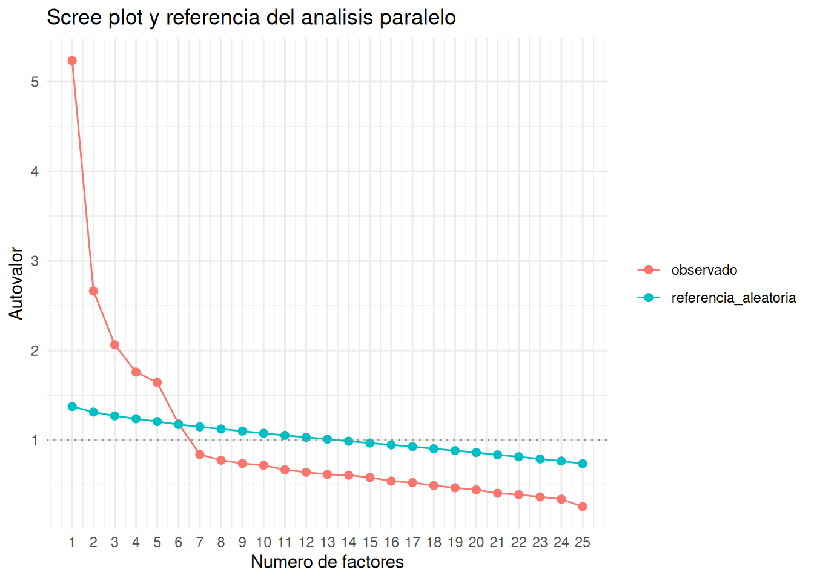
kable(numero_factores$tabla, digits = 3)| factor | observado | referencia_aleatoria | supera_referencia |
|---|---|---|---|
| 1 | 5.235 | 1.376 | TRUE |
| 2 | 2.664 | 1.314 | TRUE |
| 3 | 2.065 | 1.271 | TRUE |
| 4 | 1.759 | 1.239 | TRUE |
| 5 | 1.644 | 1.208 | TRUE |
| 6 | 1.182 | 1.174 | TRUE |
| 7 | 0.840 | 1.149 | FALSE |
| 8 | 0.777 | 1.124 | FALSE |
| 9 | 0.740 | 1.101 | FALSE |
| 10 | 0.719 | 1.077 | FALSE |
| 11 | 0.670 | 1.054 | FALSE |
| 12 | 0.643 | 1.032 | FALSE |
| 13 | 0.618 | 1.011 | FALSE |
| 14 | 0.610 | 0.988 | FALSE |
| 15 | 0.584 | 0.968 | FALSE |
| 16 | 0.544 | 0.948 | FALSE |
| 17 | 0.527 | 0.928 | FALSE |
| 18 | 0.495 | 0.904 | FALSE |
| 19 | 0.469 | 0.883 | FALSE |
| 20 | 0.446 | 0.863 | FALSE |
| 21 | 0.408 | 0.836 | FALSE |
| 22 | 0.392 | 0.815 | FALSE |
| 23 | 0.367 | 0.791 | FALSE |
| 24 | 0.342 | 0.767 | FALSE |
| 25 | 0.259 | 0.738 | FALSE |
La regla del autovalor mayor que uno es popular, pero débil. El análisis paralelo compara los autovalores observados con los que aparecerían al romper la estructura de correlación. Ninguno de los dos criterios sustituye la interpretación ni el diagnóstico del ajuste.
En la práctica se combinan varios criterios:
Hay varios métodos de extracción. Algunos habituales son:
No todos responden exactamente a la misma función objetivo. Por eso, cuando el resultado cambia mucho entre métodos, conviene ser prudente.
En todos los casos buscamos parámetros que hagan
\[ R\approx\widehat R=\widehat\Lambda\widehat\Phi\widehat\Lambda^\mathsf T+\widehat\Psi. \]
Por ejemplo, mínimos residuos intenta hacer pequeña, principalmente fuera de la diagonal, una cantidad del tipo
\[ \sum_{j<\ell}\left(r_{j\ell}-\widehat r_{j\ell}\right)^2. \]
Esto distingue el AFE de PCA: aquí el objetivo es reproducir relaciones entre variables, no maximizar la varianza de una combinación lineal.
fa_minres <- psych::fa(
datos_factorial,
nfactors = 5,
rotate = "none",
fm = "minres",
scores = "regression"
)
resumir_factorial(fa_minres)$variables |>
kable(digits = 3)| variable | factor_principal | carga_principal | numero_cargas_relevantes | comunalidad | unicidad | carga_cruzada |
|---|---|---|---|---|---|---|
| A1 | MR5 | -0.383 | 1 | 0.187 | 0.813 | FALSE |
| A2 | MR1 | 0.432 | 2 | 0.461 | 0.539 | TRUE |
| A3 | MR1 | 0.475 | 1 | 0.474 | 0.526 | FALSE |
| A4 | MR1 | 0.392 | 1 | 0.311 | 0.689 | FALSE |
| A5 | MR1 | 0.581 | 1 | 0.460 | 0.540 | FALSE |
| C1 | MR1 | 0.377 | 2 | 0.318 | 0.682 | TRUE |
| C2 | MR1 | 0.422 | 3 | 0.479 | 0.521 | TRUE |
| C3 | MR1 | 0.379 | 2 | 0.332 | 0.668 | TRUE |
| C4 | MR1 | -0.508 | 2 | 0.482 | 0.518 | TRUE |
| C5 | MR1 | -0.483 | 2 | 0.387 | 0.613 | TRUE |
| E1 | MR1 | -0.380 | 1 | 0.364 | 0.636 | FALSE |
| E2 | MR1 | -0.592 | 1 | 0.502 | 0.498 | FALSE |
| E3 | MR1 | 0.499 | 1 | 0.431 | 0.569 | FALSE |
| E4 | MR1 | 0.542 | 2 | 0.457 | 0.543 | TRUE |
| E5 | MR1 | 0.547 | 1 | 0.471 | 0.529 | FALSE |
| N1 | MR2 | 0.591 | 3 | 0.675 | 0.325 | TRUE |
| N2 | MR2 | 0.619 | 2 | 0.635 | 0.365 | TRUE |
| N3 | MR2 | 0.590 | 2 | 0.543 | 0.457 | TRUE |
| N4 | MR1 | -0.548 | 2 | 0.511 | 0.489 | TRUE |
| N5 | MR2 | 0.445 | 2 | 0.392 | 0.608 | TRUE |
| O1 | MR1 | 0.355 | 1 | 0.284 | 0.716 | FALSE |
| O2 | MR3 | 0.348 | 1 | 0.242 | 0.758 | FALSE |
| O3 | MR1 | 0.426 | 2 | 0.523 | 0.477 | TRUE |
| O4 | MR5 | 0.353 | 2 | 0.316 | 0.684 | TRUE |
| O5 | MR3 | 0.343 | 1 | 0.296 | 0.704 | FALSE |
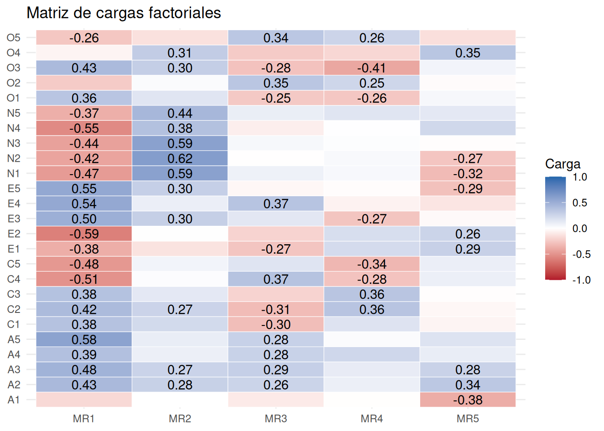
La solución sin rotar suele concentrar asociación general en los primeros factores. Todavía no conviene asignar nombres definitivos.
Una solución factorial no rotada puede explicar bien la matriz de correlaciones, pero ser difícil de interpretar. La rotación busca una estructura simple: variables con cargas altas en pocos factores y bajas en los demás.
Matemáticamente, si \(T\) es una matriz de rotación, podemos transformar las cargas:
\[ \Lambda^* = \Lambda T. \]
La solución rotada intenta conservar la capacidad explicativa global, pero redistribuye las cargas para mejorar la interpretación.
En una rotación ortogonal, \(T^\mathsf TT=I\). Entonces
\[ (\Lambda T)(\Lambda T)^\mathsf T =\Lambda TT^\mathsf T\Lambda^\mathsf T =\Lambda\Lambda^\mathsf T. \]
La nube de variables no cambia: cambian los ejes con los que describimos sus coordenadas. Por eso una rotación ortogonal puede mejorar la interpretación sin mejorar el ajuste.
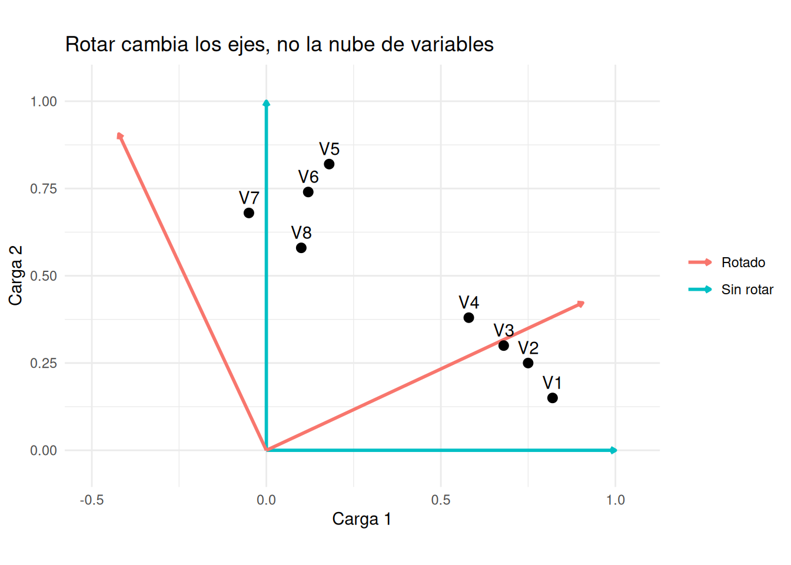
Varimax es una rotación ortogonal. Mantiene factores no correlacionados. Su intuición es hacer que, dentro de cada factor, algunas cargas sean grandes y otras pequeñas.
Una forma de su criterio es maximizar
\[ \sum_{k=1}^{m}\left[ \frac1p\sum_{j=1}^{p}\lambda_{jk}^4- \left(\frac1p\sum_{j=1}^{p}\lambda_{jk}^2\right)^2 \right]. \]
Así favorece columnas cuyas cargas al cuadrado son muy desiguales: unas variables definen claramente el factor y las demás apenas cargan.
fa_varimax <- psych::fa(datos_factorial, nfactors = 5, rotate = "varimax", fm = "minres", scores = "regression")
variables_por_factor(fa_varimax, umbral = 0.35) |>
kable(digits = 3)| variable | factor | carga | carga_absoluta |
|---|---|---|---|
| E2 | MR1 | -0.635 | 0.635 |
| E1 | MR1 | -0.596 | 0.596 |
| E4 | MR1 | 0.574 | 0.574 |
| E5 | MR1 | 0.516 | 0.516 |
| E3 | MR1 | 0.503 | 0.503 |
| N4 | MR1 | -0.399 | 0.399 |
| A5 | MR1 | 0.360 | 0.360 |
| N1 | MR2 | 0.774 | 0.774 |
| N2 | MR2 | 0.766 | 0.766 |
| N3 | MR2 | 0.723 | 0.723 |
| N5 | MR2 | 0.566 | 0.566 |
| N4 | MR2 | 0.556 | 0.556 |
| O3 | MR3 | 0.658 | 0.658 |
| O5 | MR3 | -0.527 | 0.527 |
| O1 | MR3 | 0.476 | 0.476 |
| O2 | MR3 | -0.433 | 0.433 |
| O4 | MR3 | 0.431 | 0.431 |
| C2 | MR4 | 0.662 | 0.662 |
| C4 | MR4 | -0.628 | 0.628 |
| C3 | MR4 | 0.553 | 0.553 |
| C5 | MR4 | -0.547 | 0.547 |
| C1 | MR4 | 0.501 | 0.501 |
| E5 | MR4 | 0.400 | 0.400 |
| A2 | MR5 | 0.631 | 0.631 |
| A3 | MR5 | 0.616 | 0.616 |
| A5 | MR5 | 0.524 | 0.524 |
| A4 | MR5 | 0.434 | 0.434 |
| A1 | MR5 | -0.397 | 0.397 |
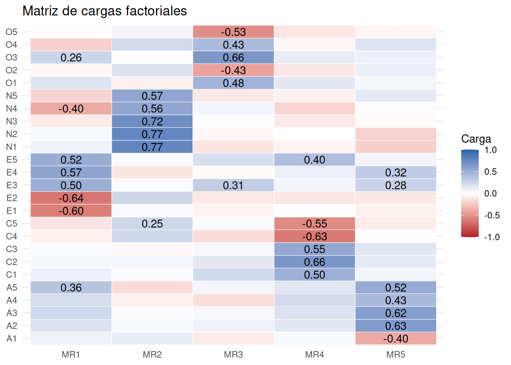
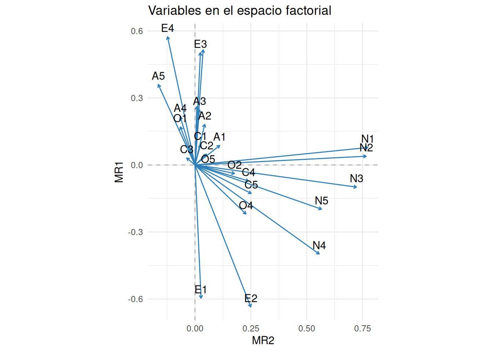
Oblimin permite que los factores estén correlacionados. Esto puede ser más realista en ciencias sociales, salud o comportamiento: dos dimensiones latentes pueden estar relacionadas.
fa_oblimin <- psych::fa(datos_factorial, nfactors = 5, rotate = "oblimin", fm = "minres", scores = "regression")
kable(round(fa_oblimin$Phi, 3))| MR2 | MR1 | MR5 | MR4 | MR3 | |
|---|---|---|---|---|---|
| MR2 | 1.000 | -0.206 | 0.227 | -0.054 | -0.002 |
| MR1 | -0.206 | 1.000 | -0.279 | 0.226 | 0.238 |
| MR5 | 0.227 | -0.279 | 1.000 | -0.235 | -0.147 |
| MR4 | -0.054 | 0.226 | -0.235 | 1.000 | 0.199 |
| MR3 | -0.002 | 0.238 | -0.147 | 0.199 | 1.000 |
Si los factores oblicuos están muy correlacionados, quizá no son dimensiones tan separadas. Si no están correlacionados, una rotación ortogonal puede ser suficiente.
En una solución oblicua conviene distinguir la matriz patrón \(\Lambda\), con coeficientes parciales, y la matriz de estructura \(S=\Lambda\Phi\), con correlaciones simples variable–factor. Coinciden cuando \(\Phi=I\), pero no cuando los factores se correlacionan.
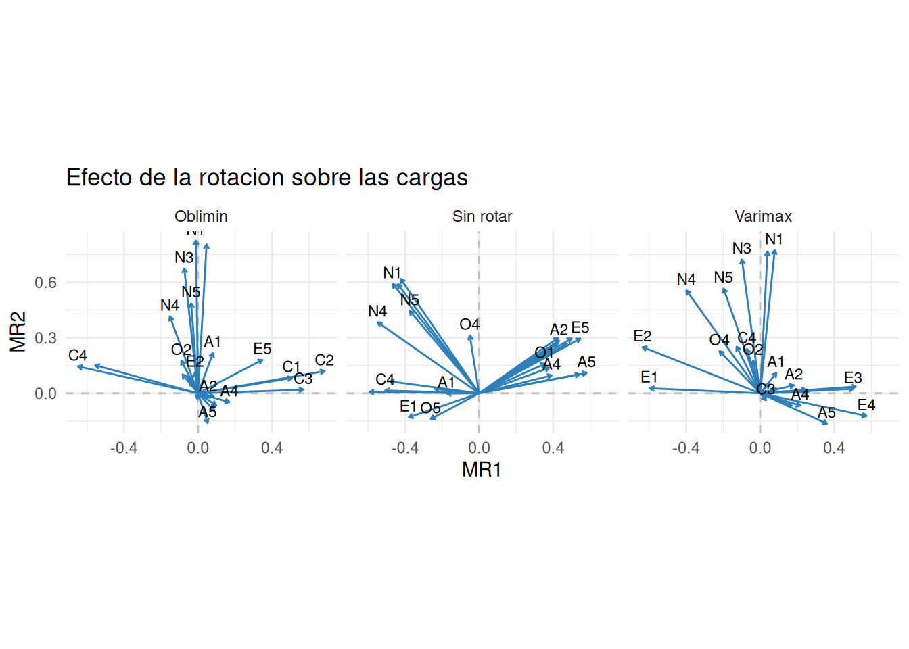
Una carga cruzada aparece cuando una variable carga de forma relevante en más de un factor. Por ejemplo, si una variable tiene carga 0.45 en el factor 1 y 0.42 en el factor 2, no representa limpiamente una sola dimensión.
Las cargas cruzadas pueden indicar:
No conviene forzar nombres de factores si las cargas no sostienen una interpretación simple.
Una forma de diagnosticar el ajuste es comparar la matriz de correlaciones observada con la reproducida por el modelo factorial.
diagnostico_ajuste <- comparar_correlaciones_factorial(datos_factorial, fa_varimax)
diagnostico_ajuste$grafico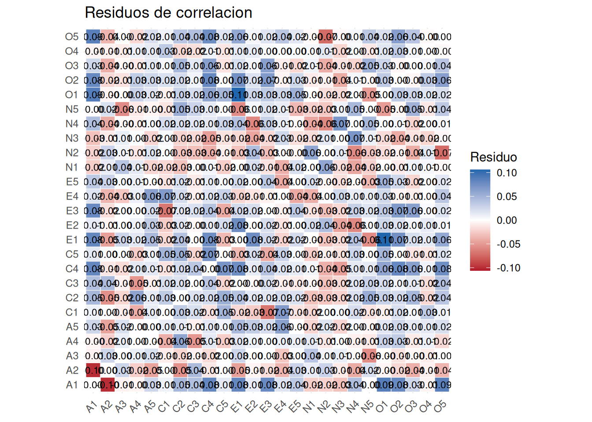
diagnostico_ajuste$rmsr[1] 0.03249557Residuos grandes sugieren que la solución factorial no reproduce bien algunas asociaciones. Un patrón dentro de un bloque puede indicar un factor omitido, ítems casi duplicados o errores específicos correlacionados. Aumentar el número de factores reducirá normalmente los residuos, pero puede empeorar la parsimonia y la estabilidad.
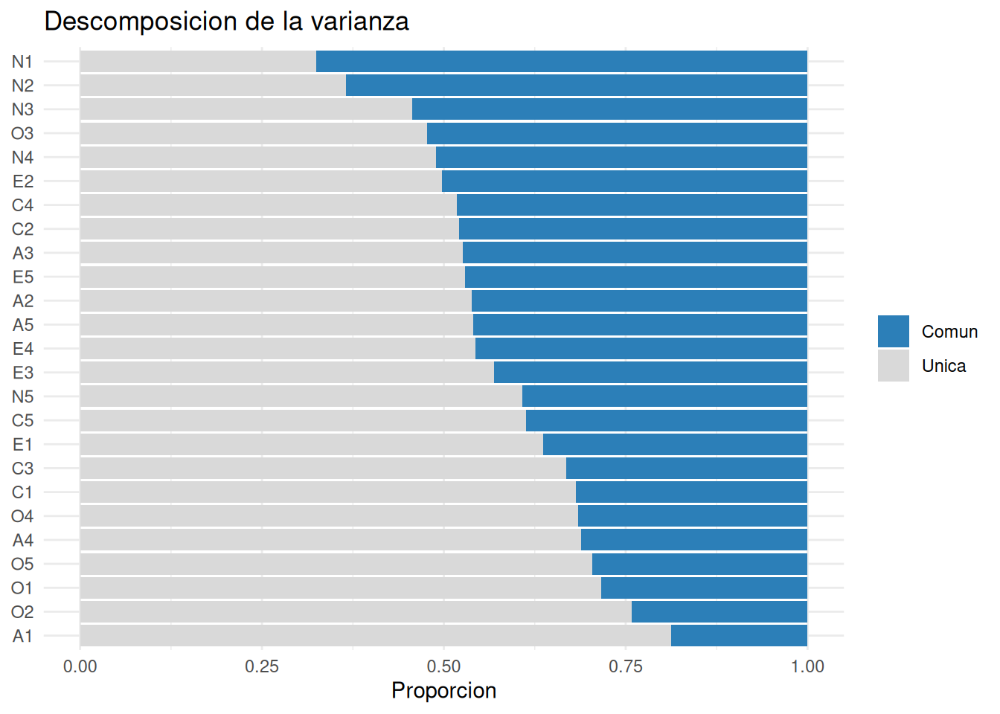
Los scores estiman la posición de cada individuo en los factores. No son observaciones directas del factor latente, sino estimaciones dependientes del modelo.
head(round(fa_varimax$scores, 2)) |>
kable()| MR2 | MR1 | MR4 | MR5 | MR3 |
|---|---|---|---|---|
| -0.47 | 0.09 | -1.13 | -0.70 | -1.38 |
| 0.06 | 0.47 | -0.68 | -0.17 | -0.18 |
| 0.52 | 0.33 | 0.13 | -0.90 | 0.21 |
| -0.22 | 0.10 | -0.89 | -0.09 | -1.03 |
| -0.35 | 0.35 | -0.07 | -0.77 | -0.61 |
| 0.31 | 1.05 | 1.33 | -0.07 | 0.38 |
Una forma esquemática de entender los scores por regresión es:
\[ \hat{F} = X B, \]
donde \(B\) es una matriz de pesos calculada a partir de cargas, unicidades y correlaciones. Los scores pueden servir para gráficos, clustering posterior o perfiles, pero no deben confundirse con medidas directas del factor.
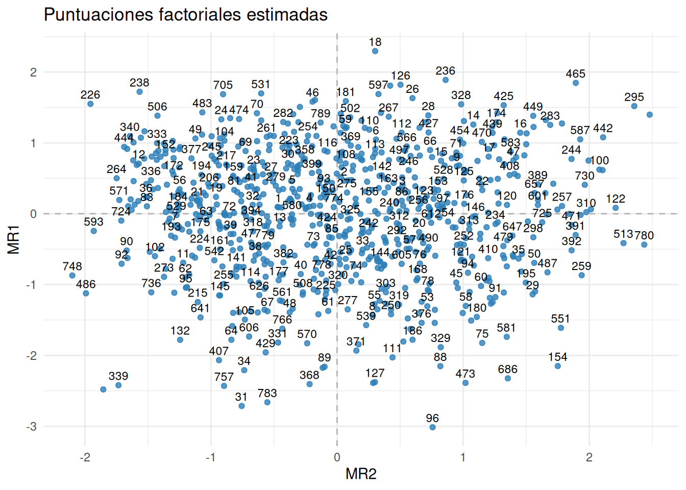
Las puntuaciones no son únicas: diferentes métodos pueden estimar valores distintos aun con las mismas cargas. Deben tratarse como estimaciones dependientes del modelo, no como observaciones directas de la variable latente.
| Aspecto | PCA | Análisis factorial |
|---|---|---|
| Objetivo | Resumir varianza total | Explicar covarianza común |
| Variables nuevas | Componentes observables como combinaciones lineales | Factores latentes estimados |
| Varianza específica | Forma parte de la varianza resumida | Se separa en unicidad/error |
| Modelo estadístico | Descriptivo geométrico | Modelo de covarianzas |
| Interpretación | Ejes de máxima varianza | Dimensiones latentes hipotéticas |
PCA puede ser suficiente si queremos una representación compacta. FA tiene más sentido si sostenemos que existen dimensiones latentes que generan las correlaciones observadas.
El análisis factorial necesita correlaciones suficientes, tamaño muestral razonable y una solución interpretable. En datasets pequeños como mtcars, los resultados sirven para aprender el procedimiento, no para sostener una teoría fuerte.
Limitaciones importantes:
El análisis factorial exploratorio busca factores latentes que expliquen covarianza común. Su modelo separa cargas, comunalidades, unicidades y errores específicos. La interpretación depende del número de factores, método de extracción, rotación, residuos, cargas cruzadas y sentido aplicado de las variables.
| Función | Para qué se usa | Uso básico |
|---|---|---|
psych::fa() |
Ajustar el modelo declarando número, extracción y rotación. | psych::fa(datos, nfactors = 5, fm = "minres", rotate = "varimax") |
comprobar_adecuacion_factorial() |
Obtener KMO, Bartlett y correlaciones. | adecuacion <- comprobar_adecuacion_factorial(datos) |
visualizar_numero_factores() |
Comparar autovalores con una referencia aleatoria. | numero <- visualizar_numero_factores(datos) |
resumir_factorial() |
Reunir cargas, comunalidades, unicidades y cargas cruzadas. | resumen <- resumir_factorial(ajuste) |
variables_por_factor() |
Ordenar las variables relevantes de cada factor. | variables_por_factor(ajuste, 0.35) |
visualizar_varianza_factorial() |
Comparar comunalidad y unicidad. | visualizar_varianza_factorial(ajuste) |
visualizar_matriz_cargas() |
Mostrar las cargas como mapa de calor. | visualizar_matriz_cargas(ajuste) |
visualizar_cargas_factoriales() |
Representar variables sobre dos factores. | visualizar_cargas_factoriales(ajuste, c(1, 2)) |
comparar_rotaciones_factoriales() |
Comparar varias orientaciones de los factores. | comparar_rotaciones_factoriales(ajustes) |
comparar_correlaciones_factorial() |
Obtener matrices observada, reproducida y residual. | comparar_correlaciones_factorial(datos, ajuste) |
visualizar_puntuaciones_factoriales() |
Representar puntuaciones estimadas. | visualizar_puntuaciones_factoriales(ajuste) |